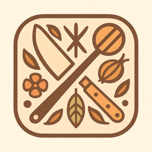

Recipe Scanner
In development
Point your camera at a cookbook page. GastroSnap turns it into a real recipe you can cook from — ingredients, steps, and all — no retyping.
Runs on your own AI key (bring-your-own-key) — your recipes and receipts go straight from your phone to your own account, never through our servers, because we don't have any.